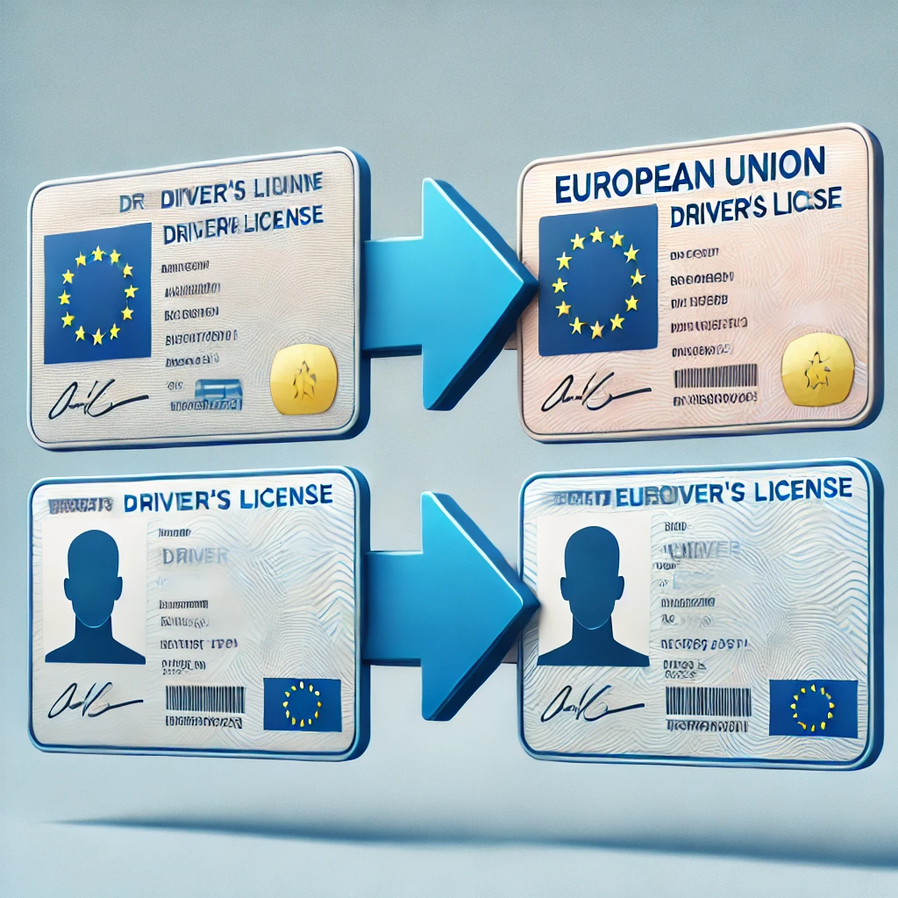

CANJES DE PERMISOS DE CONDUCIR

¿Tienes un permiso de conducir expedido en el extranjero y quieres conducir en España? En Gestoría Hellín te ayudamos a canjear tu permiso por uno español, para que puedas circular legalmente sin problemas.
Nos encargamos de todos los trámites necesarios, incluyendo:
- Asesoramiento sobre la documentación requerida según tu país de origen.
- Revisión y comprobación de la documentación.
- Presentación de la solicitud en la Jefatura Provincial de Tráfico.
- Obtención y entrega de tu nuevo permiso de conducir español.
Ten en cuenta que los requisitos y plazos para el canje pueden variar según el país de origen del permiso. Contacta con nosotros para obtener información más detallada sobre el proceso de canje.
¿Necesitas ayuda con la documentación de tu vehículo?
¡Contáctanos hoy mismo! En Gestoría Hellín te ayudamos con transferencias, matriculaciones, bajas e informes de vehículos.
Solicitar Información